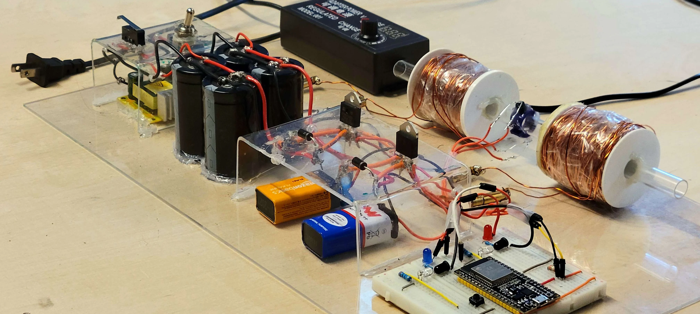
Multistage Coil Gun
About the Project
In our first year of engineering, my friend and I wanted to build a coil gun for fun :)
I learned to work with thyristors, solenoids, optocouplers, ESP32s, boost converters, and soldering irons in this project.
The project features massive capacitors along with some really heavy hand wound solenoids. The result is a super powerful (and dangerous) turret capable of firing metal projectiles at terrifying speeds.
Shoutout to my friend Rachad, who I did this project with!
See the gun in action here! ➔
How It Works
Coil guns utilize solenoids, which can be made from coils of magnetic wire. When a high current is passed through these wires, a strong magnetic field is generated. This magnetic field attract the bullet, accelerating it quickly forward.
In our multistage coil gun, we have two solenoids placed in series. As the bullet passes the first solenoid, it passes an IR sensor which automatically triggers the second stage to fire.
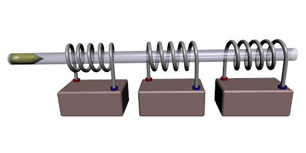
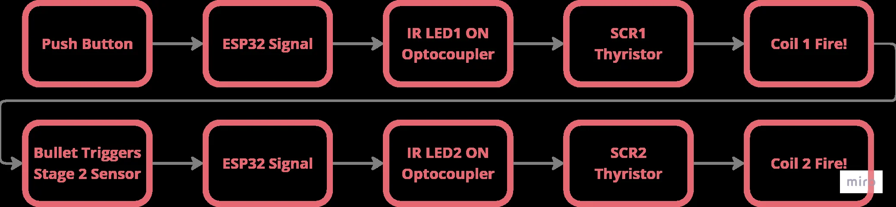
Electrical Components
Working Voltage
We wanted our coil gun to be super powerful so we bought the largest capacitors we could find at our Lee's electronics. We also bought a DC-DC buck booster to allow us to get a voltage of about 385V from our 12V power supply.
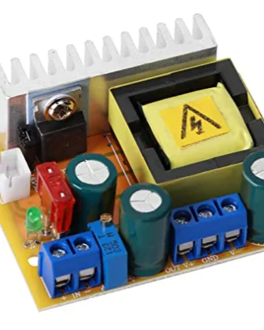
DC-DC Buck Boost, can boost 12V to 390V
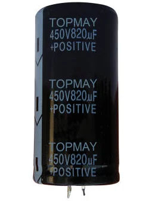
3 x 450V, 850uF and 1 x 450V, 780uF total
Preliminary Test with Bullet POW!
Accidental Short! RIP Floor, Goodbye Security Deposit :(
Optocouplers
We used optocouplers to protect our components from the extremely high voltages/currents present in our circuit.
Optocouplers use an LED and a phototransistor to transmit signals as light. This allows us to electrically isolate our high and low voltage systems while still allowing them to communicate.
Unfortunately I believe we accidentally damaged our optocoupler as it stopped working as intended. We ended up making our own optocoupler out of an IR LED and IR receiver.
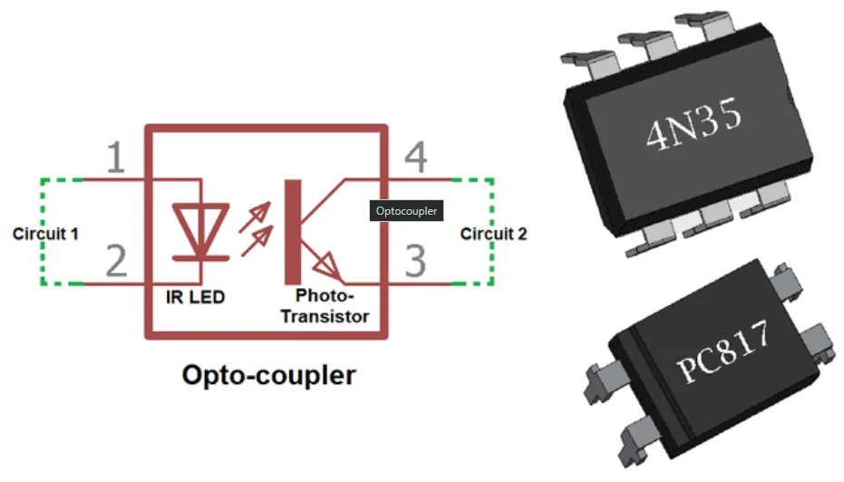
SCR - Thyristors
Thyristors can switch quickly and handle large currents/voltages. They also only require a brief trigger pulse to start conducting, and they don't stop conducting until no more current is flowing. This allows us to switch on our solenoid with a quick pulse (push button click) and lets the solenoids automatically turn off when the capacitor banks are depleted.
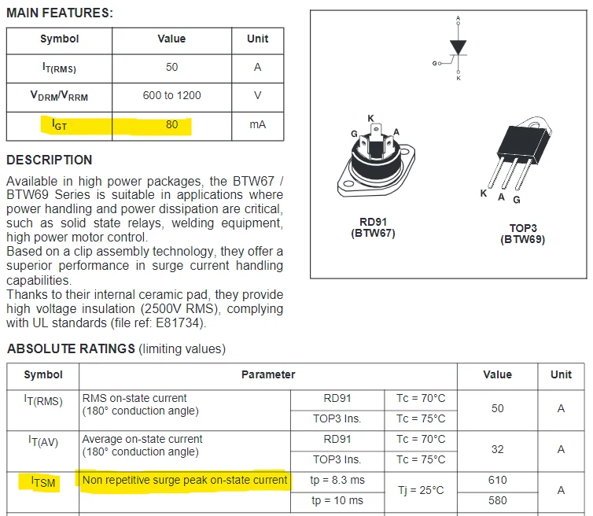
Thyristor Datasheet
Early Test With Thyristor and Optocoupler
Second Stage
To trigger the second stage, we use an IR emitter and receiver in a beam break configuration. Once the bullet passes through the IR beam an interrupt on the ESP32 triggers the second stage. We probably could have used a not gate but we didn't have those on hand, the ESP32 also allows us to log data regarding when the first/second stages are fired.
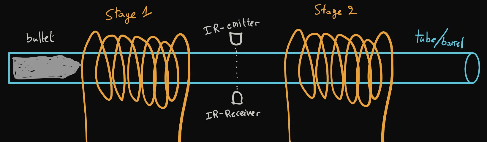

Test With the Automatic Second Stage
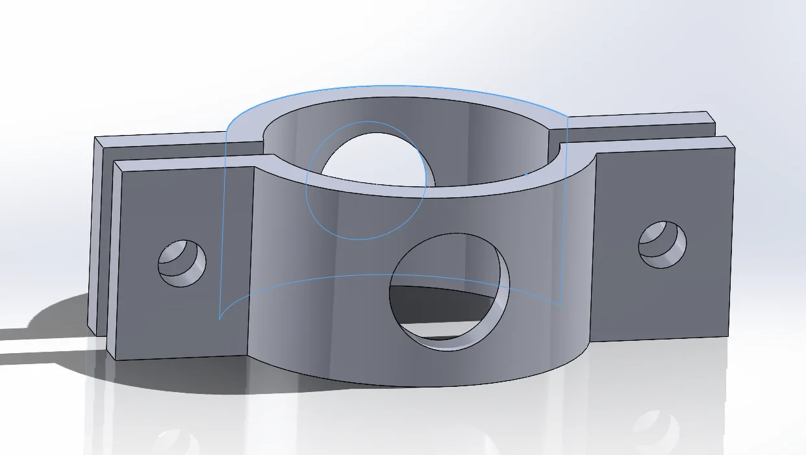
CAD of the IR Sensor Mount
Full Circuit
We based our circuit off B.Sampson's circuit. We've made small adjustments with certain components like replacing the optocoupler with an IR receiver and emitter when ours broke but everything else is pretty similar.
Here on the right is our constructed circuit with the different voltage levels sectioned off/highlighted.
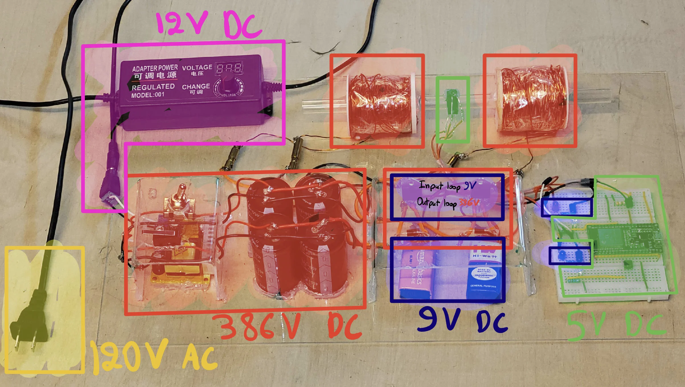
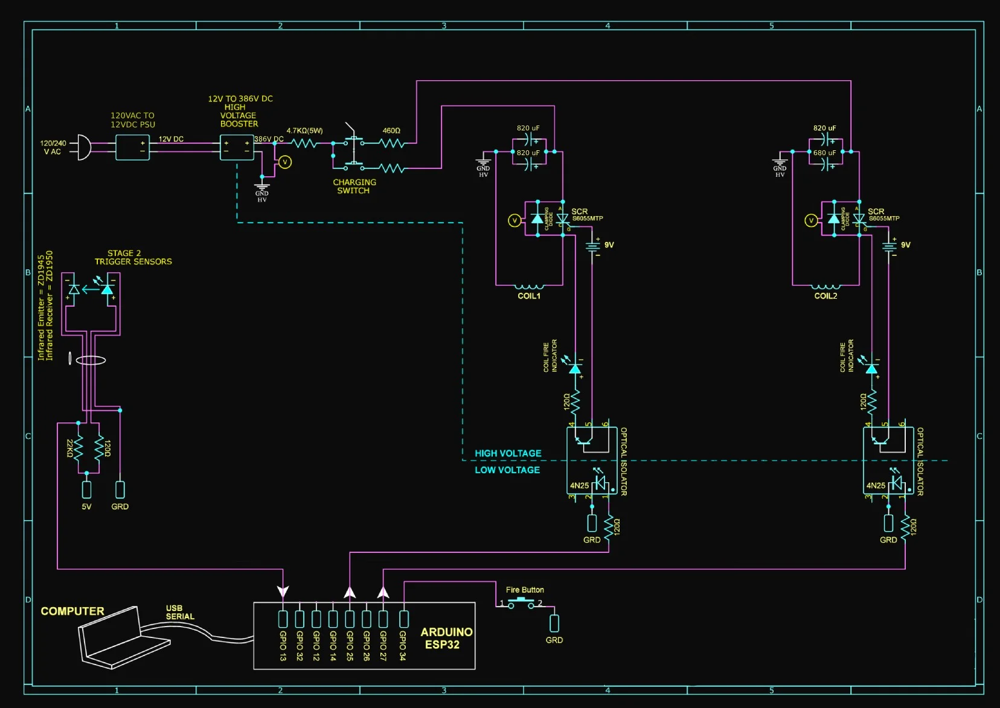
Manufacturing and Assembly
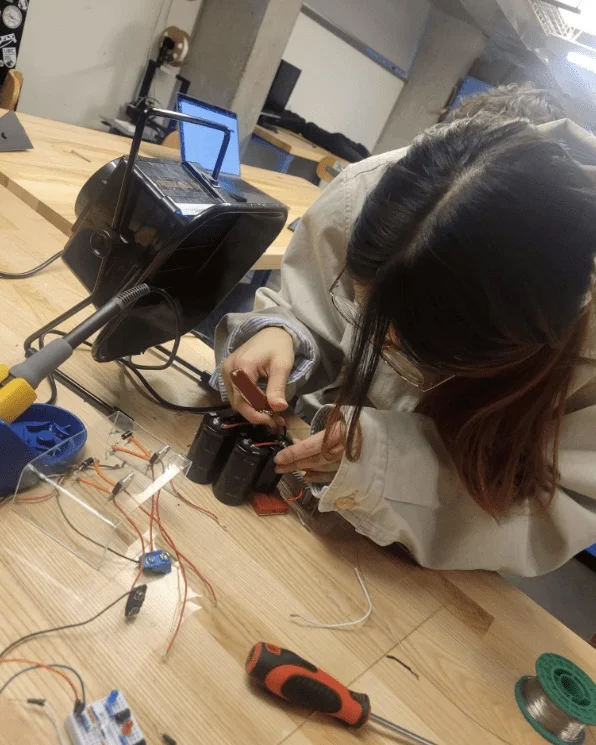
Fiddling With the Caps
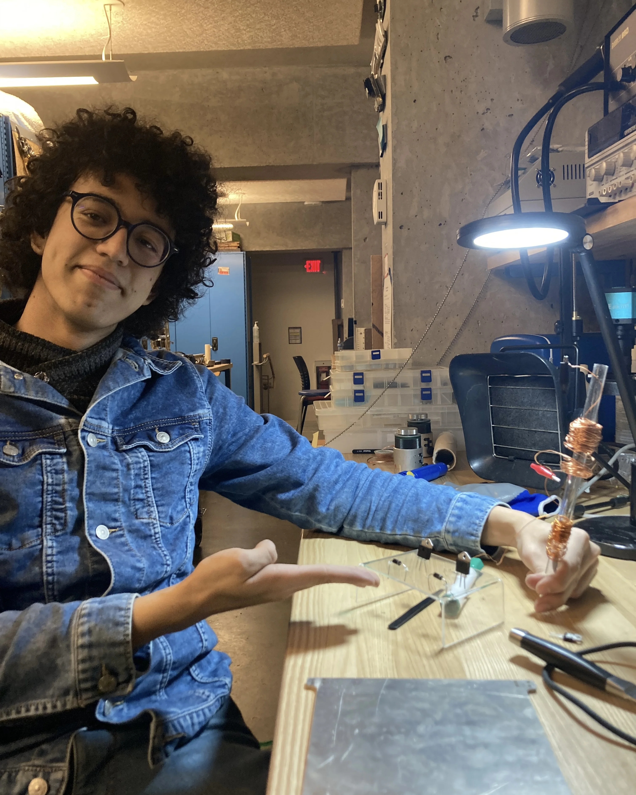
Rachad With the Bent Plexiglass
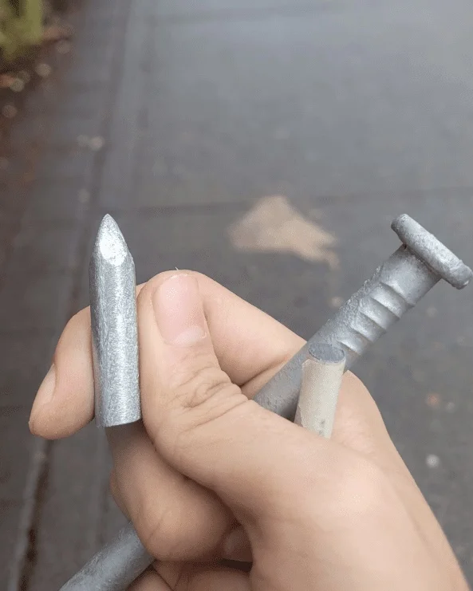
Metal "Bullets" from Home Depot
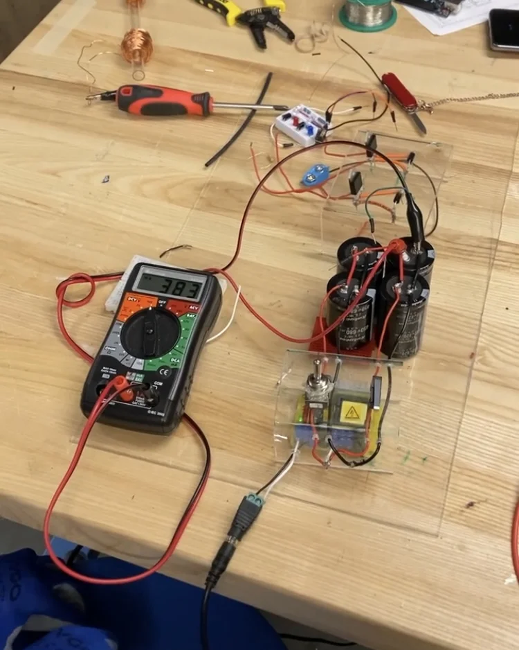
Voltage Measurement
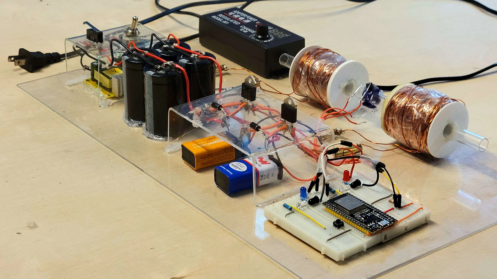
Fully Assembled Circuit!
Optimization
The final step of our coil gun project was optimizing the solenoid placement and the bullet's starting position for maximum speed.
The diagram on the right shows the two parameters we were trying to optimize for. d1: the location of the first solenoid, and d2: the location of the second solenoid.
We tried to load the bullet in the same starting location each time.
To optimize for bullet exit speed, we built a speedometer using two IR emitter-receiver pairs set at a fixed distance to measure the bullet's velocity. A custom CAD-mounted fixture secured the IR sensors at a fixed distance to the end of the gun.
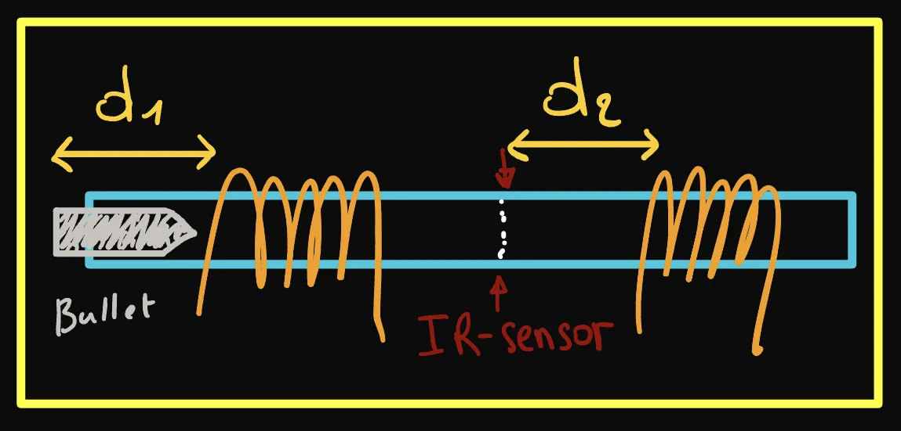
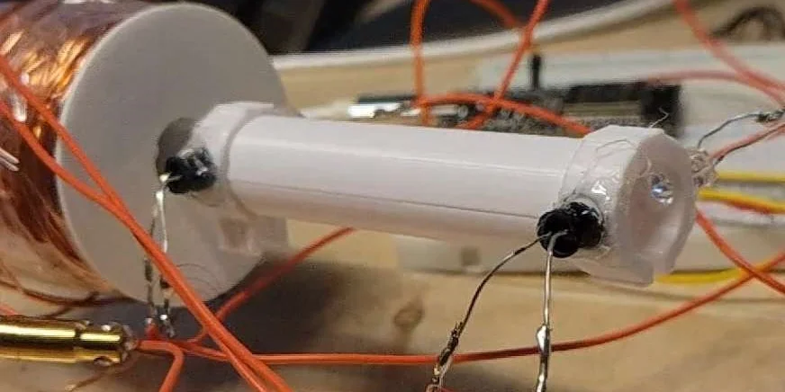
3D Printed Speedometer
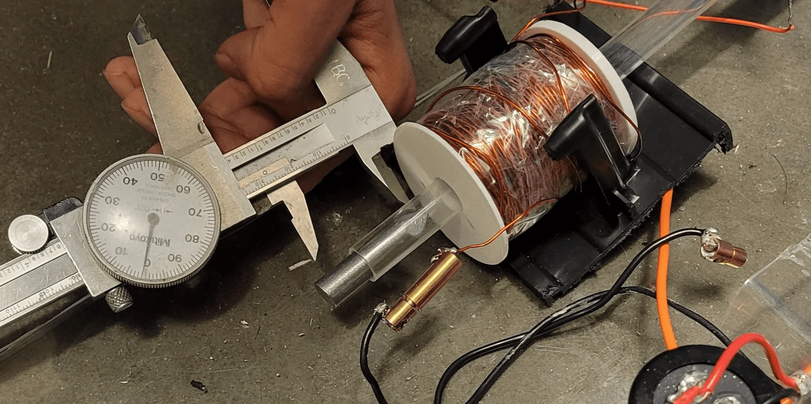
Taking position Measurements
First we took various measurements of the bullet's speed while we varied the location of the first solenoid (d1). For each test, we took multiple measurements and then recorded the average value. We then plotted the data and glued the first solenoid to its most optimal location.
We then repeated this process but varied the location of the second solenoid (d2). The second solenoid was then glued to sit in its most optimal location.
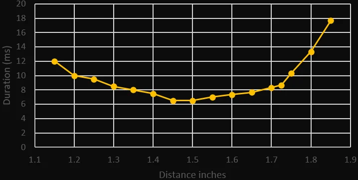
d1: Location of First Solenoid
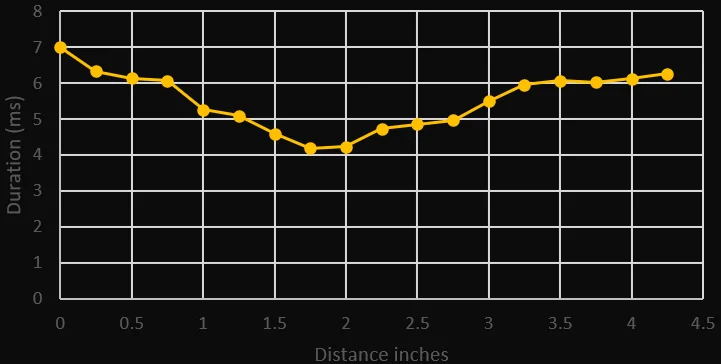
d2: Location of Second Solenoid